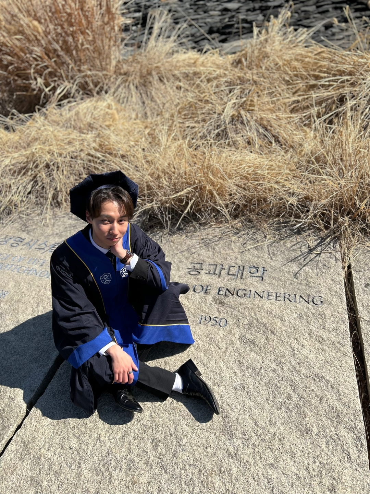
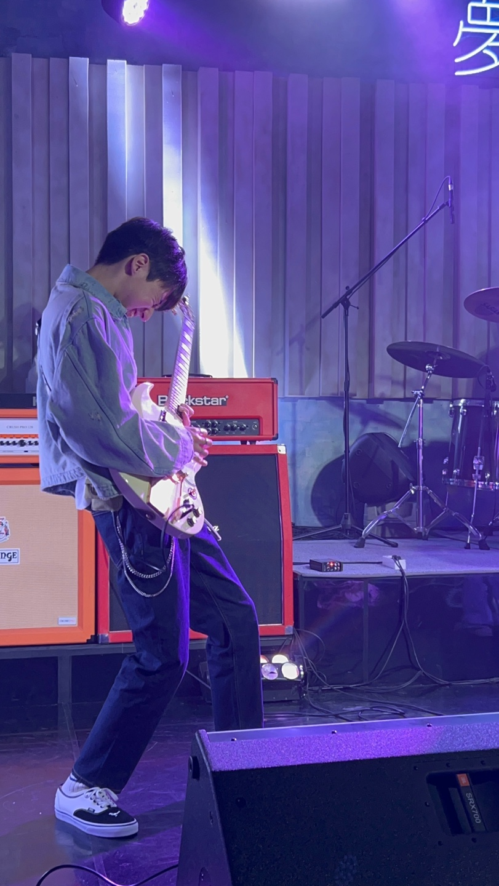
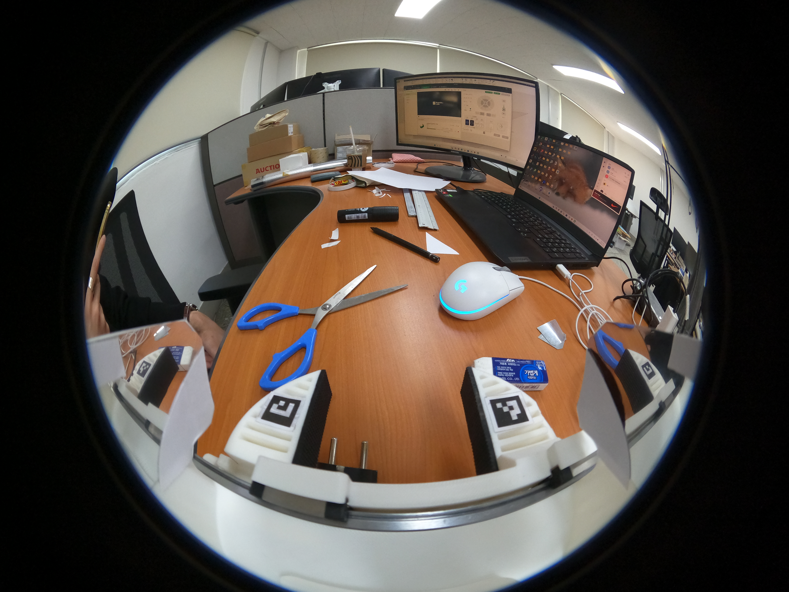
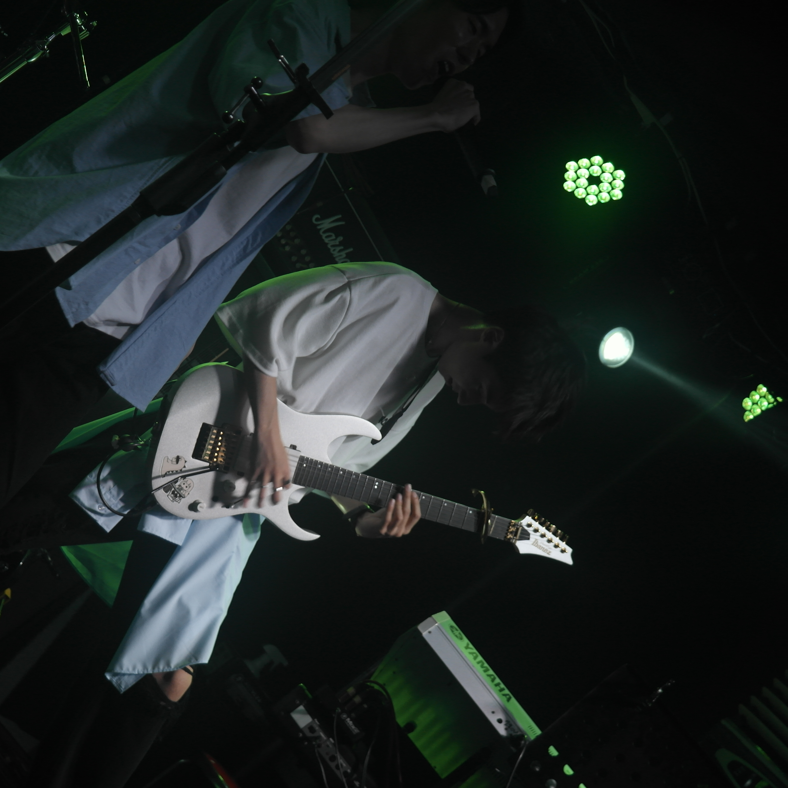
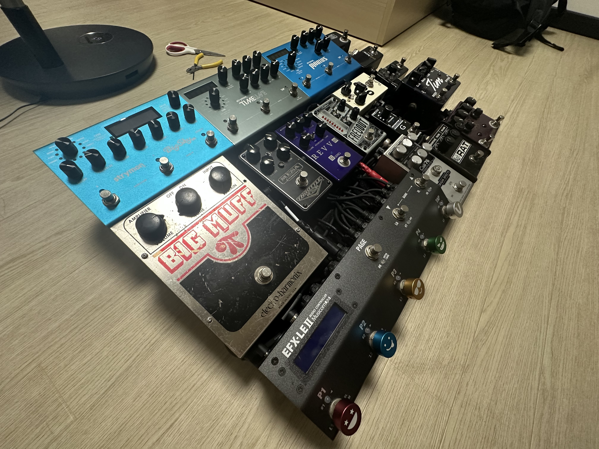
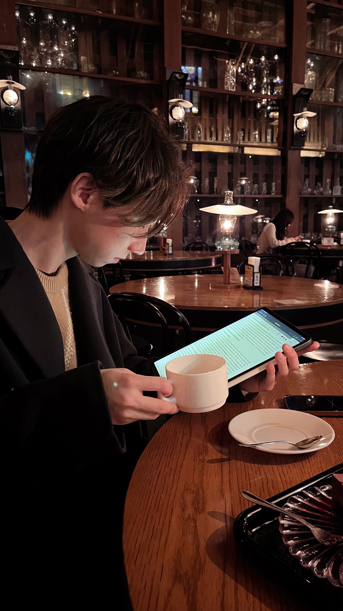

Welcome!
I am a Mechanical Engineer
and Music Artist.
Hello, my name is Geonung Jo, and my artist name is Wilt.
My background is in mechanical engineering, and music has been a part of my life for over 16 years. I enjoy designing mechanical systems, understanding how they move, and exploring the sounds I can create with musical instruments.
These interests have led me to explore robotics, control systems, and audio effects—and the possibilities that emerge when engineering and music come together.


Interests & Skills
What I explore.
Engineering.
I like making things move, interact, and respond.
INTERESTS
- Mechanical Design
- Robotics & Control
- AI & Machine Learning
MY TOOLBOX
- Design & prototyping
- Creo · 3D Printing
- Modeling & control
- MATLAB / Simulink · Control System Design & Optimization
- Programming & AI
- Python · C++ · PyTorch · LLMs & Retrieval-Augmented Generation
Music.
I love playing, shaping tones, and discovering new sounds.
INTERESTS
- Guitar, Bass & Vocal
- Audio Effects & Sound Design
- Recording & Mixing
MY TOOLBOX
- Performance
- Electric Guitar (16+ years) · Bass Guitar · Vocal Training
- Tone & signal chains
- Effects Signal Chain Design · Sound Design · Audio Processing
- Studio & musical practice
- Logic Pro · Recording & Mixing · Music Theory & Improvisation
Education & Experience
My journey so far.
-
–
Pusan National University
Undergraduate studies in Mechanical Engineering
Studied mechanical engineering before transferring to Yonsei University.
–
Advanced Robotics Laboratory
Undergraduate research intern.
-
–
Yonsei University
B.S. in Mechanical Engineering
-
– Present
Machine Learning and Control Systems Lab
Research intern · Hardware specialist
Research spanning mechanical hardware, robotics, control systems, and audio effects.
-
– Present
Busan Metropolitan Office of Education
Social Service Agent · Emergency Planning Team
Alternative military service. Expected completion: .
Continuing laboratory research during off-duty hours and weekends.




Keep Exploring
Curious about
what I build?
Explore my research, musical projects, and the ideas I hope to pursue next.